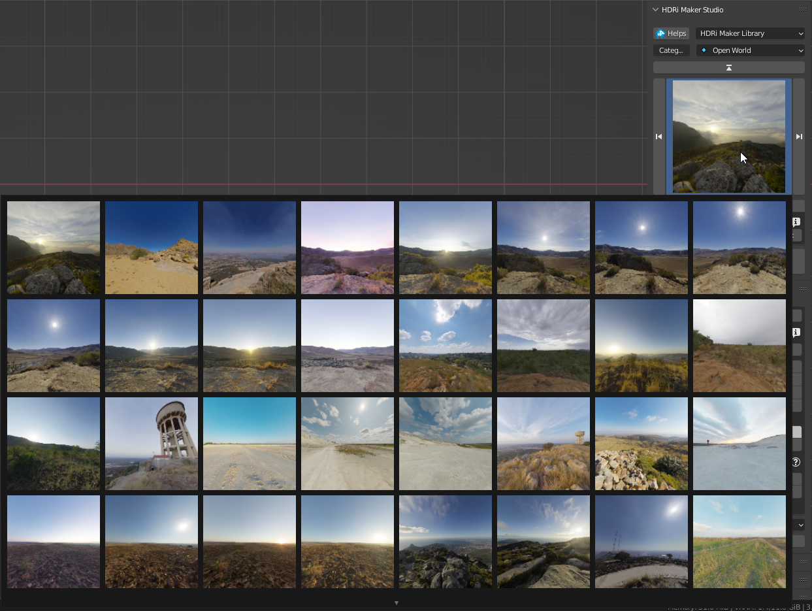

Main Panel
Quick overview of the Main Panel:
Libraries selector
This area is used to choose the library, the category (of the library) and the category search via the text field.

Search category by entering text
This allows you to search for a category by typing the name of the category

Library Browser
This allows you to search for the preview in the current Library and Category.
Preview Popup

This allows you to select the background (Each library will have its own background), a pop-up window will appear with the list of preview backgrounds
UP-DOWN/LEFT-RIGHT Arrows
Up/Down arrows allow you to scroll through the list of categories Left/Right arrows allow you to scroll through the list of backgrounds (Into the selected category)
Force reload icons
If the preview is not loaded correctly, this allows you to reload the preview
Options Button
This button opens the Blender preferences window and goes directly to the “Options” section of HDRI Maker

Tag Search Size Selector
This small menu in the box, allows you to Select the size / version of the material (If there is an alternative) Contains The search for tag / background name and information on the background currently in the preview.

Search Background by entering text
This allows you to search for a background by typing the name of the background (It work with the tag Restrictions if you need)

Search for tag
- This allows you to search for a background by typing the name of the tag
In the upper field, you can enter the name of the tag you want to include in the search
In the lower field, you can enter the name of the tag you want to exclude from the search
Keep the tags separated with a space if you want to include more than one tag in the search.
In this way, the categories and the previews will be filtered according to the tags entered.
Info & Tag
This button will open a dialog window with information about the background currently in preview. inside there will be information about the author, the license. There will also be the tags that have been assigned to the background, they can also be modified from here.
Edit Tags
In the info & Tag panel you can edit the tags assigned to the background. To do this, just click on the “Edit Tags” button and enter the desired tags. You can also delete existing tags, just press on them, and a dialog box will be displayed that will ask you if you want to delete the tag. This tag will then be useful for searching for backgrounds by tag.

Note
Tags can only be edited if you have checked the “Edit Tags” box
Material Version Selector
If in the library there are different versions of the same material, this selection allows you to choose which version to load (Press Add to confirm)

Add Remove Buttons
Add (From the preview) / Remove (From the scene) buttons

Add Button:
This button adds the selected background to the scene. Use Ctrl + Click to open the File Browser and import a background from an external file
Note
If you are in the “Tools” category this button acquires the “Add Tool” function and allows you to add the tools included in the Tools directly to the scene. Example: In “Tools” -> “Light Studio” adds a solid color dome, And directional lights.
Light Studio |
Import Background |
|
|


{kind=link}
{kind=link}
{kind=link}
{kind=link}
{kind=link}
{kind=link}
{kind=link}
{kind=link}